This chair is one of our mesh chairs, so some parts may differ in size and style from the chair you have ordered. We chose this chair because it requires more assembly than most of our other chairs, and acts as a good guide/example to show how easy even this is to put together.
1) Unpack all items and lay them out, as you can see there isn’t much to it.
| 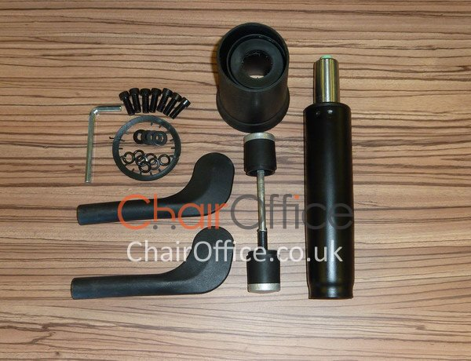 | 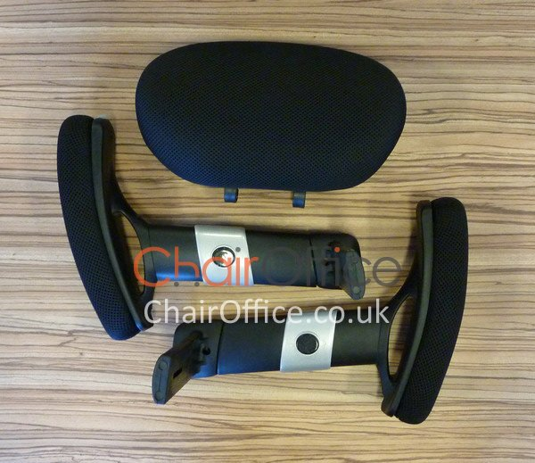 | 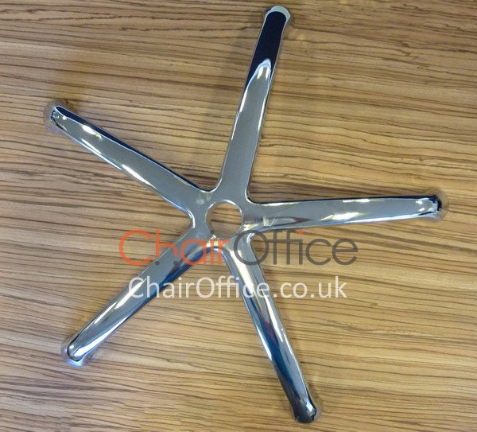 | 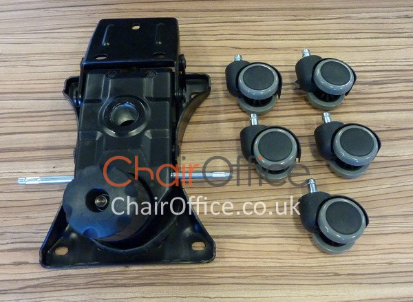 | 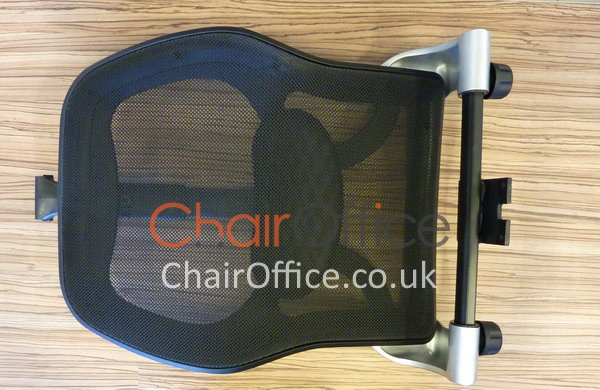 |
2) Take the casters and push them into the 5 star base.
3) Place gas strut cover over gas strut.
| 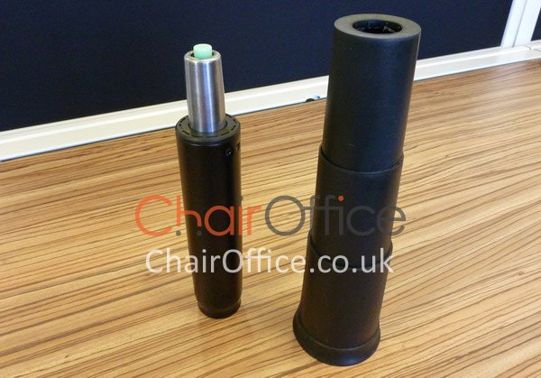 | 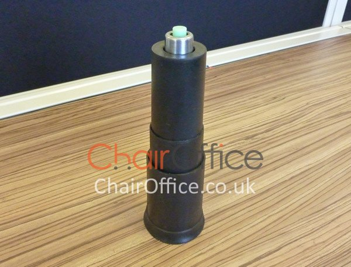 |
4) Place the gas strut into 5 star base, it has a tapered fit - So when will become tighter once the chair is sat on.
| 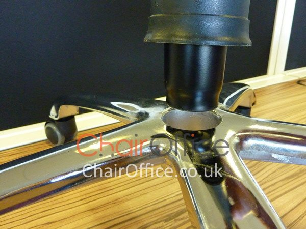 | 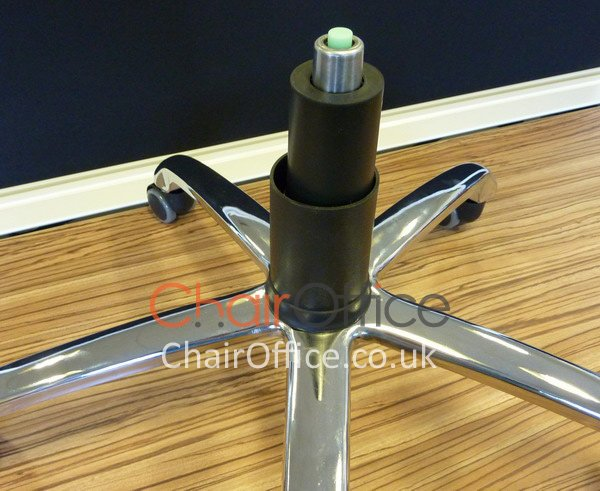 |
5) Fit chair back onto mechanism, it just slides in as shown below. The image below shows the chair back being held upside down to make it easier to slide onto the main chair mech (Mechanism). Bolt it together using the bolts supplied.
| 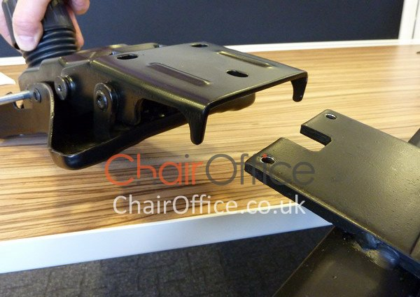 | 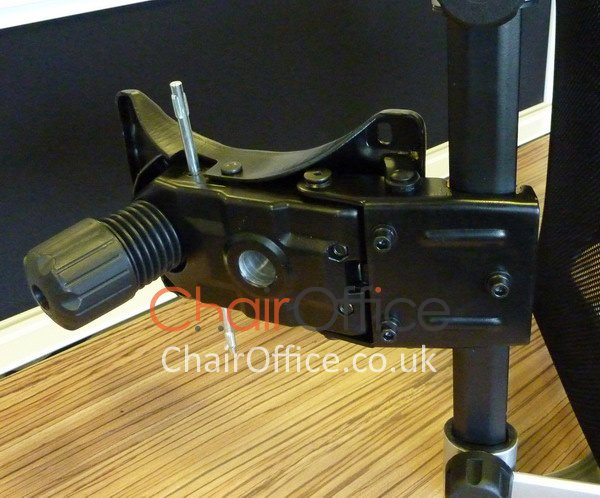 |
6) Now place the main chair mechanism (with the chair back attached) onto underside of seat, aligning the 4 bolt holes in the underside of the seat. Then bolt the mech, onto the seat as shown below.
| 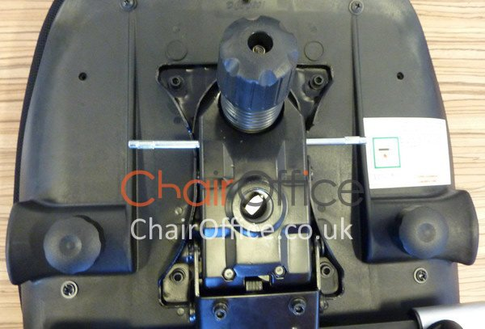 | 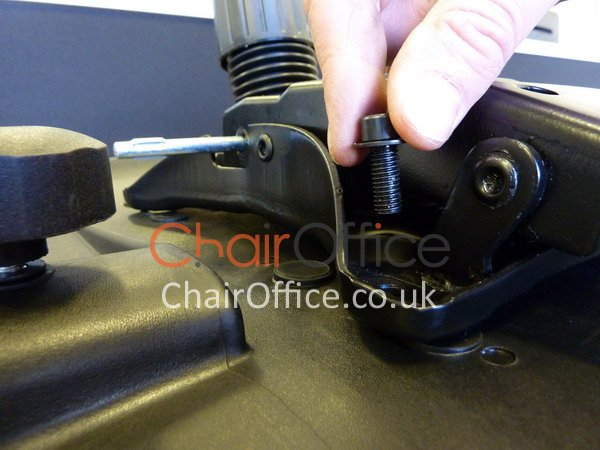 |
7) Slide the small paddle handles onto the silver levers sticking out of either side of the chair mech (You can see the silver paddle levers above)
8) Attach armrests to underside of the chair, just slide them into the side and then turn the hand screw to tighten them up.
| 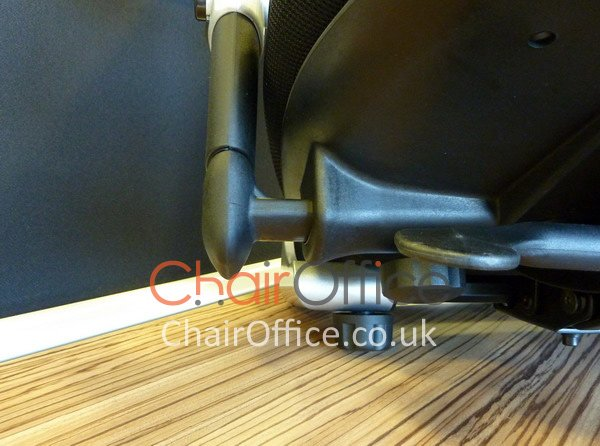 | 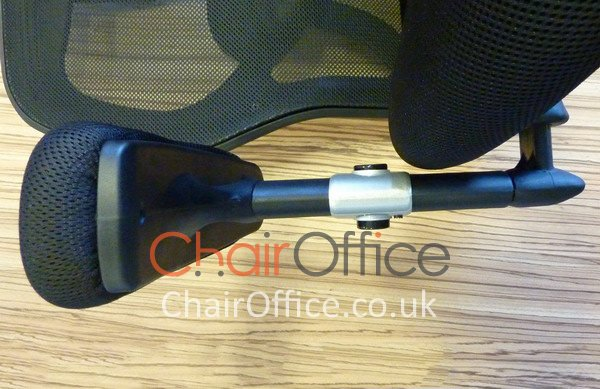 |
9) Place the chair onto the gas strut & 5 star base securely.
| 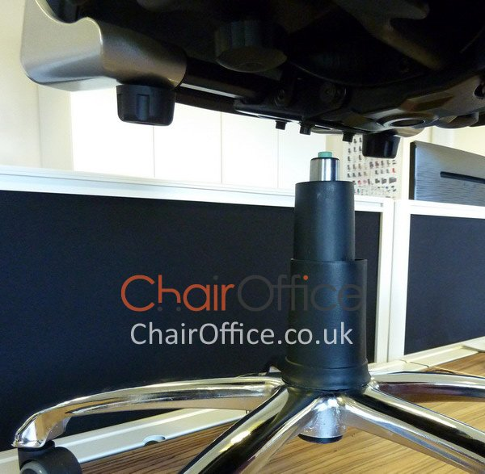 | |
10) Lastly attach the headrest, and you're done.
| 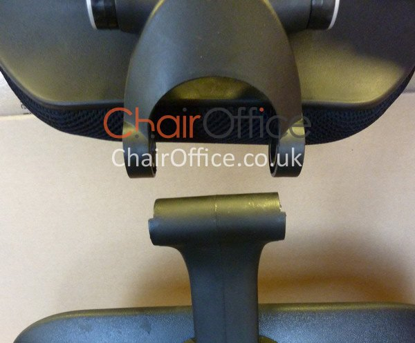 | 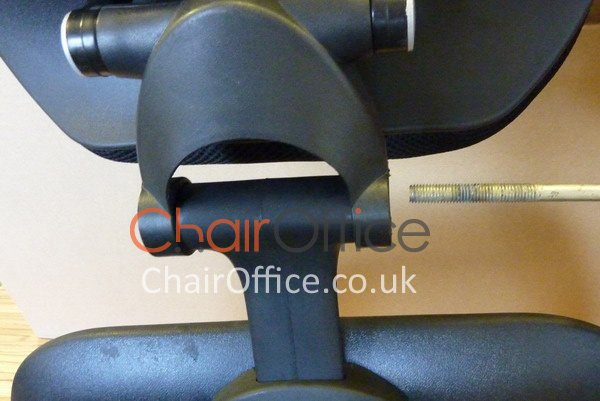 |